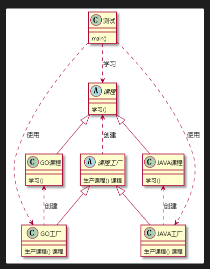
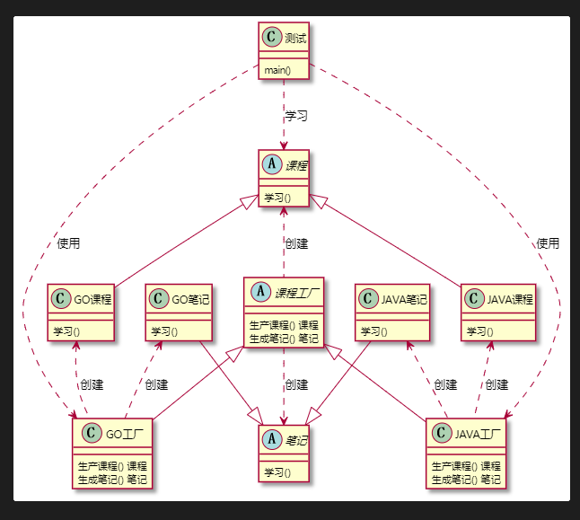
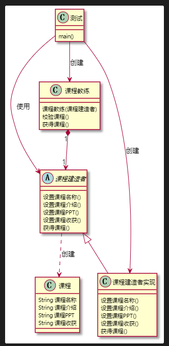
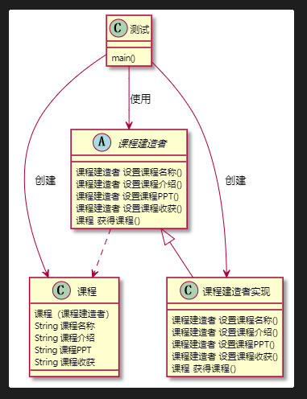
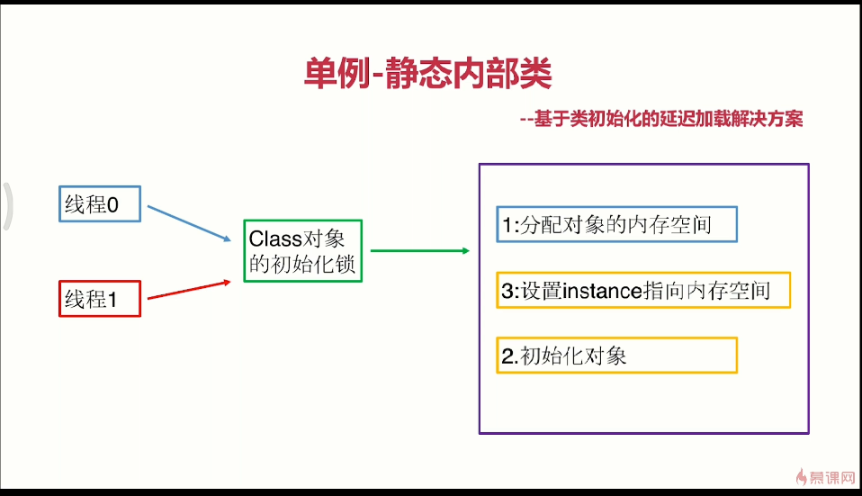

设计模式学习笔记——第三章
设计模式学习笔记——第三章
本文章是我在学习设计模式的时候所记下的笔记，只供我个人学习复习使用，不适合系统的学习，本文章的推荐资料也会在此贴出来。
返回设计模式首页
第三章 创建型设计模式
简单工厂模式
工厂方法模式
定义：定义一个创建对象接口，但让实现这个接口的类来决定实例化哪个类。工厂方法让类的实例化推迟到子类中进行
适用场景：创建对象需要大量重复的代码。客户端(应用层)不依赖于铲平类实例如何被创建、实现等细节。一个类通过其子类来指定创建哪个对象
优点：用户只需要关心所需产品对应的工厂，无需关心创建细节。加入新产品符合开闭原则，提高可扩展性
缺点：类的个数容易过多，增加负责度，增加了系统的抽象性和理解难度
1 | @startuml aaa |

抽象工厂模式
定义：抽象工厂模式提供了一个创建一系列相关或相互依赖对象的接口，无须指定他们具体的类
使用场景：客户端(应用层)不依赖于产品类实例如何被创建、实现等细节。强调一系列相关的产品对象(属于同一产品族)一起使用创建对象需要大量重复代码。提供一个产品类的库，所有的产品以同样的接口出现，从而使客户端不依赖于具体实现。
优点：具体产品在应用层代码隔离，无需关心创建细节。将一个系列的产品族统一到一起创建。
缺点：规定了所有可能被创建的产品集合，产品族中扩展新的产品困难，需要修改抽象工厂的接口。增加了系统的抽象性和理解难度。
1 | @startuml aaa |

建造者模式
定义：将一个复杂对象的构建与它的表示分离，使得同样的构造过程可以创建不同的表示。用户只需要指定需要建造的类型就可以得到它们，建造过程及细节不需要知道。
使用场景：如果一个对象有非常复杂的内部结构(很多属性),想把复杂对象创建和使用分离
优点：封装性好，创建和使用分离。扩展性好、建造类之间独立、一定程度上解耦。
缺点：产生多余的Builder对象。产品内部发生变化，建造者都要修改，成本较大。
实现一
1 | @startuml 建造者设计模式 |

实现2
1 | @startuml 建造者设计模式 |

可能图示有点体现的不太清楚 就是测试类里 创建课程建造者类的实现 赋值给课程建造者引用 使用课程建造者引用 链式调用各个方法 然后把课程建造者 当作参数 传递给 课程 构造器
源码解析 : JAVA里的 StringBuilder类
开源工具类 com.google.common.collect.ImmutableSet
单例模式
定义：保证一个类仅有一个实例，并提供一个全局访问点
适用场景：想确保任何情况下都绝对只有一个实例
优点：在内存里只有一个实例，减少了内存开销。可以避免对资源的多重占用。设置全局访问点，严格控制访问
缺点：没有接口，扩展困难
重点：私有构造器，线程安全，延迟加载，序列化和反序列化安全，反射攻击
实用技能：反编译，内存原理，多线程Debug
相关设计模式：单例模式和工厂模式；单例模式和享元模式
形式：懒汉式，饿汉式
懒汉式：当类加载的时候不进行单例实例的创建，当需要的时候才进行创建，可能会有线程安全问题
饿汉式：当类加载的时候直接进行单例实例的创建，不会有线程安全问题，但有可能会造成内存的浪费。
对于JAVA：可能单例模式可能产生问题。1.序列化破坏单例模式（需要增加一个 static 单例对象 readResolve()的方法 具体可以参考反序列化还原对象的源码）2.反射攻击破坏单例模式（可以试图在私有的构造器中做手脚 若发现私有构造器被调用多次则进行报错 但对于懒汉式无法真正解决反射攻击 对于饿汉式可以解决）
对于懒汉式JAVA线程不安全的解决方法
获得实例化getInstance方法里整个上锁 保证获取单例对象过程中不会有人修改单例对象
缺点：速度过慢
双重检查 每次都要判断单例对象是否已经生成 若发现未生成 才加锁 锁里头双重验证但单例对象是否生成 若未生成再加锁
讲单例放入静态内部类中作为成员变量 当加载外部类的时候不会加载静态内部类 当真正获取实例对象的时候才会加载静态内部类

对于JAVA可以使用Enum枚举类来实现单例，这可以有效地避开序列化破坏以及反射攻击，但其本质上是使用饿汉式来实现的，具体可以进行反编译class文件来进行查看
在JAVA里头可以使用ThreadLocal 可以基于在每个线程之间实现单例模式
原型模式
定义：指原型实例指定创建对象的种类，并且通过拷贝这些原型创建新的对象,不需要知道任何创建的细节，不调用构造函数
适用场景：类初始化消耗较多资源，new产生的一个对象需要非常繁琐的过程（数据准备、访问权限等），构造函数比较复杂。循环体创建大量对象
优点：原型模式性能比直接new一个对象性能更高，简化创建过程
缺点：必须配备克隆方法，对克隆复杂对象或对克隆出的对象进行复杂改造时，容易引入风险，深拷贝、浅拷贝要运用得当
原型扩展：深克隆、浅克隆
在JAVA要实现克隆方法都需要实现Cloneable接口
深克隆和浅克隆的问题 ：当某个引用数据类型的成员变量中也是一个引用数据类型时 默认的clone方法 或让克隆的对象和被克隆对象的引用数据类型成员变量指向同一个地址 若想实现深克隆则需要对 引用型数据类型变量重新进行处理。
原型模式也有可能破坏单例模式，两种思路进行解决，一、单例类不实现Cloneable接口。二、clone方法返回单例的对象